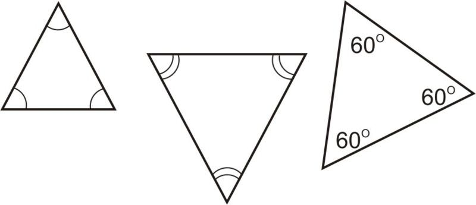

Similarity of Triangle
similarity of a triangle is a concept in which when two triangles are similar than definately it follows these two rules -
1. Corresponding angle of both the triangles are equal .
2. Corresponding sides are in the same ratio .
Equiangular Triangles - if the corresponding angles of the two triangle are equal , known as equiangular triangle .

The ratio of any two corresponding sides in two equiangular triangles is always the same.
Theorem 1 : if a line drawn parallel to the one side of a triangle , intersect the other two side in distinct points
, the other two sides are divided in the same ratio .
Proof :

Theorem 2 : if a line is divided the two sides of a triangle in the same ratio the the line is parallel to the third side of the triangle .
Proof :